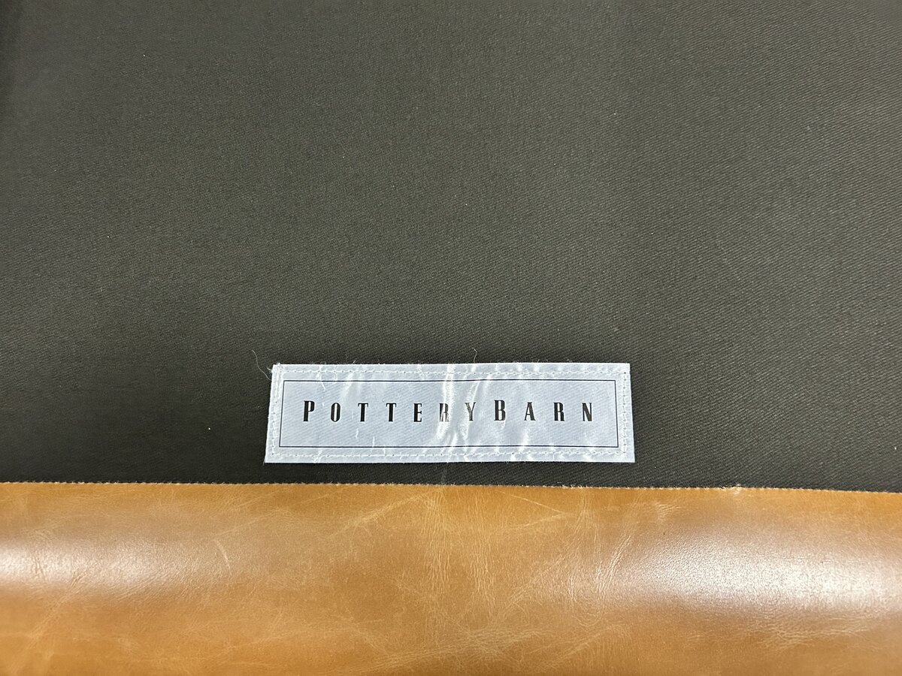

If you’ve been shopping for a used sofa in Edmonton and keep landing on Pottery Barn listings, the question is usually some version of: is this actually good furniture, or is it just a familiar name on a tag?
The honest answer is that Pottery Barn is genuinely well-made furniture for its price tier — with some real nuance underneath the brand. Where a given piece was built, which collection it belongs to, and whether it’s fabric or leather all change what you’re actually buying. This guide covers where Pottery Barn sits in the market, how its sofas are constructed, what they retail for in Canada, what pre-owned examples realistically sell for, and how the brand compares to the names Edmonton buyers most often weigh against it.
And if you already own a Pottery Barn piece and are weighing whether to sell it rather than store or donate it, the same construction details that matter to buyers are the ones that determine what yours is worth locally.
A Brief History of Pottery Barn
Pottery Barn was founded in 1949 by brothers Paul and Morris Secon, who opened a small storefront in Manhattan. The name came from the source of their first inventory: the brothers bought up surplus stoneware from Glidden Pottery, which had been stored in barn-like sheds, and named the shop after them. It began as a discount housewares store, not the lifestyle furniture brand it is today.
The business changed hands several times over the following decades. It was sold to The Gap in 1984, and then acquired by Williams-Sonoma, Inc. in 1986 — the move that reshaped it. Williams-Sonoma published the first Pottery Barn mail-order catalog in 1987 and repositioned the brand around a complete, accessible home-furnishing aesthetic. That catalog-and-showroom model is the Pottery Barn most people recognize now.
Today Pottery Barn is one of nine brands under Williams-Sonoma, Inc., a publicly traded company (NYSE: WSM) headquartered in San Francisco. Its sister brands include West Elm, Williams Sonoma, Pottery Barn Kids, Pottery Barn Teen, Williams Sonoma Home, Rejuvenation, Mark and Graham, and GreenRow. The brand operates retail stores across the United States, Canada, and several other markets, and sells to Canadian buyers directly through potterybarn.ca.
Where Pottery Barn Sits: Williams-Sonoma, West Elm, and the “Made in USA” Question
This is the most useful thing to understand before evaluating any Pottery Barn piece, new or pre-owned, because it explains both the brand’s strengths and its inconsistencies.
Pottery Barn is an upper-middle-market brand. It sits clearly above flat-pack and most big-box furniture, and clearly below dedicated premium makers. It is built to be comfortable, customizable, durable family furniture — not heirloom, lifetime construction. Judged on that basis, it largely delivers. Judged as if it were competing with a $9,000 Italian leather sofa, it doesn’t, and was never meant to.
A meaningful share of its upholstery is built in the United States. Pottery Barn designs and upholsters many of its sofas and sectionals — including its best-known fabric collection, PB Comfort — at the company’s Sutter Street workshop in western North Carolina, a region with a deep furniture-making history. Those pieces are made from a mix of U.S. and imported materials. This domestic upholstery program is a genuine quality signal and is unusual at Pottery Barn’s price point.
But not everything is made the same way. Many other categories — a lot of case goods, accent pieces, and accessories — are imported from Asia and India. So “is Pottery Barn made in the USA?” has no single answer. The right move on any specific pre-owned piece is to check its own “where it’s made” label rather than assume. A North-Carolina-built PB Comfort sofa and an imported accent piece are both “Pottery Barn,” but they are not the same purchase.
The closest analogy for shoppers cross-comparing brands is the relationship between Pottery Barn and West Elm. They are sister brands under the same parent, Williams-Sonoma, sharing supply chains and certifications. Pottery Barn leans classic, transitional, and family-oriented with deeper, softer seating; West Elm leans mid-century modern with cleaner, leggier lines. Construction is broadly comparable — the real choice is which look fits your room.
Construction: How Pottery Barn Sofas Are Built
Pottery Barn publishes more construction detail than most brands at its tier, and the fundamentals are sound.
Frames. Pottery Barn upholstered pieces are built on kiln-dried, engineered hardwood frames with corner-block reinforcement. Its flagship PB Comfort collection uses mortise-and-tenon joinery — an interlocking joint that’s stronger than staples or dowels alone. Kiln-drying the wood first matters: it removes moisture so the frame is far less likely to warp, crack, or squeak as Edmonton homes swing from humid summers to bone-dry winters. This is the kind of frame that earns a sofa a place on our buy list, and it’s worth knowing how to identify frame quality yourself before you commit to any used piece.
Suspension. Pottery Barn uses no-sag steel sinuous springs (the serpentine, zig-zag type) across the upholstery range. This is the honest, important caveat: Pottery Barn does not use eight-way hand-tied springs, the labour-intensive system found in higher-end and heirloom furniture. Sinuous springs are reliable, supportive, and entirely appropriate at this price — they simply sit a tier below hand-tied suspension and can lose a little tension sooner under heavy daily use. For most living rooms, they perform well for years.
Cushions. This is where Pottery Barn gives you choices, and the choice is the single biggest comfort variable. Standard seat cushions use a poly-wrapped foam core that holds a tidy, structured shape. Many collections also offer a down-blend-wrapped core — foam surrounded by a feather-and-down blend — for a softer, more relaxed, sink-in sit. The Turner’s standard cushion, for example, uses a down-blend wrap, which is a large part of why it feels so much plusher than its crisp, tailored lines suggest. If you’re comparing two used Pottery Barn sofas, the cushion core often matters more to how they feel than the model name does.
Certifications. Many Pottery Barn upholstered pieces are GREENGUARD Gold certified, meaning they’ve been screened for low chemical and VOC emissions — relevant if indoor air quality or kids are a concern. The brand also offers FSC-certified wood and Fair Trade Certified options across parts of its range, part of the broader Williams-Sonoma sustainability program.
That combination — domestic upholstery, kiln-dried hardwood frames, and a genuine leather program — is exactly why Pottery Barn pieces are worth a second look when we’re evaluating leather sofas to buy in Edmonton: real North American construction rarely shows up at the pre-owned prices these trade at.
What Pottery Barn Retails for in Canada and What to Pay Pre-Owned
Pottery Barn sells to Canadians in Canadian dollars, and pricing spans a wide band depending on collection, size, and upholstery. As a working guide, fabric sofas commonly run from roughly $1,800 to $3,500 CAD, leather sofas from about $2,800 to $4,800 CAD, and sectionals from around $3,500 to $7,000+ CAD before tax and delivery. Custom fabric and leather upgrades push the top of each range higher, and the brand runs frequent promotions, so a lot of pieces actually sell below sticker.
In the pre-owned market, a well-maintained Pottery Barn sofa in good condition — frame solid, cushions still resilient, upholstery clean — typically resells for roughly 25–45% of original retail. For a sofa that retailed at $3,000 CAD, that puts a fair pre-owned price somewhere around $750 to $1,350, depending on age, configuration, and condition.
That percentage is solid but deliberately not at the top of the scale, and the reason is supply. Pottery Barn is a high-volume, widely owned brand, so there’s a steady stream of used examples on the local market at any given time. Plentiful supply caps how high resale prices can climb relative to rarer premium names. The flip side is the buyer’s advantage: you can find genuine North-American-built upholstery and real leather collections at a meaningful discount, with enough inventory around to be selective about condition.
Looking for inspected, cleaned Pottery Barn and comparable sofas in Edmonton?
Browse Current InventoryHow Pottery Barn Compares to Other Brands Edmonton Buyers Consider
Pottery Barn vs. West Elm
This is the most common cross-shop, and it’s a near-even one because West Elm is Pottery Barn’s sister brand under Williams-Sonoma. They share the same parent, similar price tiers, the same certifications, and overlapping construction standards. The real difference is design language: Pottery Barn is classic and transitional with deep, soft, family-friendly seating, while West Elm is mid-century modern with cleaner lines, exposed legs, and a more compact footprint. West Elm’s slimmer pieces often suit smaller Edmonton condos and infills; Pottery Barn’s deeper builds suit family rooms. Neither is fundamentally better made — pick the one whose look fits the space.
Pottery Barn vs. Crate & Barrel
These two compete directly and sit at a very similar tier. Crate & Barrel generally reads slightly more contemporary and design-forward, and some of its premium upholstery lines move a notch upmarket of Pottery Barn. Both offer genuine upholstery quality, broad customization, and a mix of domestic and imported production. In practice the decision again comes down to aesthetic and the specific model — a top Crate & Barrel line can out-build an entry Pottery Barn one, and vice versa. On the resale market both hold value comparably and draw steady interest in Edmonton.
Pottery Barn vs. EQ3
EQ3 is a Canadian brand (designed in Winnipeg) with clean, contemporary design and a genuinely modular approach to sectionals — one of its real strengths on the pre-owned market, since individual pieces can be reconfigured or sold separately. Where Pottery Barn has the edge is the deep, plush, sink-in comfort profile and its leather program; where EQ3 has the edge is modular flexibility and a more modern look. For a buyer prioritizing layout adaptability in an awkward room, EQ3 is worth serious consideration. For a buyer who wants a soft, traditional lounge sofa, Pottery Barn fits better.
Pottery Barn vs. Urban Barn
Urban Barn is another Canadian retailer (based in the Vancouver area) at a broadly comparable mid-market tier, with a casual, contemporary catalogue and a strong local-Canadian retail presence. The two overlap heavily on price and audience. Pottery Barn’s differentiator is its North Carolina upholstery program and the depth of its leather collections; Urban Barn’s is a more current, relaxed-Canadian aesthetic and easy in-country service. Both are sensible used buys when the frame and cushions check out — treat them as peers and let condition and price decide.
Pottery Barn vs. Restoration Hardware
This is the up-tier comparison, and it’s worth being clear-eyed about: Restoration Hardware sits a full step above Pottery Barn. RH uses heavier frames, often eight-way hand-tied suspension on signature pieces, larger scale, and premium aniline and pull-up leathers, at correspondingly higher prices. If the budget and the room support it, RH is the more substantial piece of furniture. Pottery Barn’s counter-argument is value and versatility — comparable comfort and a more manageable scale for the average Edmonton home at a fraction of the cost, especially pre-owned. The brands serve different buyers more than they directly compete.

What We’ve Learned Handling Pottery Barn Pieces
Pottery Barn comes through our shop less often than the Italian leather brands, but when it does, the pieces share predictable traits worth knowing. What follows is what evaluating these in person actually teaches you — independent of what the catalogue says.
Telling a domestic build from an imported one
Because Pottery Barn splits production between its North Carolina workshop and overseas factories, the manufacturer label on the underside is the fastest way to know what you have. Tip the piece and read the “where it’s made” line. A North-Carolina-built PB Comfort or similar upholstery piece is a stronger buy than an imported one at the same price, and on the secondary market the two are easy to confuse if you only go by the brand name.
Reading the cushion core: poly-wrap vs. down-blend
The single biggest comfort variable on a used Pottery Barn sofa is the cushion core, and you can feel it in five seconds. A poly-wrapped foam cushion sits firm and holds a crisp shape; a down-blend-wrapped cushion sits soft and forgiving and shows gentle “rumple.” Neither is a defect — they’re different cushion options Pottery Barn sells from new. But know which you’re sitting on, because a slightly rumpled down-blend cushion is normal and fluffable, not worn out.
What “Contract Grade” actually signals
Some Pottery Barn pieces — the Turner among them — are labelled Contract Grade, meaning they were engineered and tested to commercial-use standards drawn from select ANSI/BIFMA protocols. In plain terms, it’s a heavier-duty build meant to survive hospitality and office use, not just a living room. On the used market that’s a quiet green flag: a contract-grade frame has more margin left in it than a standard residential one of the same age.
Slipcovered models: the hidden resale advantage
Pottery Barn is one of the few brands at this tier that sells true slipcovered sofas — the PB Comfort and Basic lines among them — with washable, replaceable covers. On the secondary market this is a genuine advantage most buyers underrate: a tired or stained slipcovered sofa can be brought back to life with a wash or a fresh cover, where a fixed-upholstery sofa with the same wear is simply marked down. If you’re buying used with kids or pets in the picture, a slipcovered Pottery Barn piece is one of the smarter buys on the market.
Leather lines age differently than fabric lines
Pottery Barn’s top-grain, aniline-dyed leather collections — the Turner and the contract-grade Manhattan among them — are only lightly finished, so they show natural grain and tonal variation and keep softening into a patina with use. That’s by design, not damage: light scuffing and colour shift on an aniline hide is character, and often improves with conditioning. Fabric and performance-fabric models, by contrast, show their age through pilling, flattening, and stains. Judge each on its own terms — a “worn-looking” aniline leather piece may be in better real condition than a fabric one that looks tidier.
Pottery Barn’s resale market in Edmonton
Pottery Barn is a recognized, trusted name here, so listings draw reliable buyer interest — the brand sells itself to a degree that lesser-known labels don’t. The trade-off is volume: there’s usually competing supply, so accurate pricing and clean condition are what separate a quick sale from a stale listing. If you own a Pottery Barn sofa in good shape, there is a real local market for it, and the sell page is the fastest way to find out what yours is worth. Pieces that have moved through our hands end up in the recently sold archive.
What to Look for in a Used Pottery Barn
Beyond the standard used-sofa inspection — frame integrity, cushion resilience, structural soundness — there are Pottery-Barn-specific factors worth checking.
The manufacturer label. Read the underside tag for where the piece was made, the collection name, and whether it’s Contract Grade. This single label tells you most of what you need to know about how the piece was built and how it should be priced.
Cushion recovery. Press into the seat and watch how it rebounds. Poly-wrap should spring back firmly; down-blend should rebound softly and can be fluffed. What you don’t want is a cushion that stays compressed and dead — that signals foam that’s past its life, which on a poly-wrap cushion typically shows up after years of heavy daily use. Cushion inserts are replaceable, but factor the cost into your offer.
Spring tension. Sit firmly in the centre of each seat and feel for even support. Because Pottery Barn uses sinuous (not hand-tied) springs, a heavily used older piece can develop a softer centre. Mild give is fine; a pronounced sag or any metallic clicking means the suspension needs attention.
Slipcover condition and availability. On slipcovered models, check the cover for shrinkage, fading, and seam wear, and confirm whether replacement covers are still offered for that collection. A sound frame under a tired cover is a buying opportunity, not a flaw.
Leather finish on aniline pieces. On the leather collections, expect — and don’t over-penalize — natural grain, tonal variation, and light patina. Do check armrests, seat fronts, and seams under strong light for cracking or dryness, which conditioning can often improve but not always reverse. Even, all-over patina is desirable; isolated cracking at stress points is what to price around.
The Bottom Line
Pottery Barn is a legitimate, well-made brand for its tier — honest upper-middle-market furniture with a genuine North American upholstery program, kiln-dried hardwood frames, and a real top-grain leather lineup. In the pre-owned market it represents dependable value: solid construction and recognizable design at roughly 25–45% of retail, with enough supply around to buy on condition rather than scarcity.
The honest caveats: Pottery Barn uses sinuous rather than eight-way hand-tied springs, not everything carries the desirable North Carolina build, and as a high-volume brand it won’t hold resale value like the rarer premium names. But for a comfortable, customizable, family-grade sofa — especially a slipcovered or aniline-leather model in clean condition — Pottery Barn consistently earns its place. It’s the kind of brand where the specific piece matters more than the logo, and a good one is a genuinely smart buy. For broader context on which brands age well, our guide to the best sofa brands for resale value puts Pottery Barn in the wider field.
Edmonton Refreshed sources, inspects, and lists Pottery Barn and comparable pieces when they meet acquisition standards — frame integrity, cushion and spring condition, and upholstery quality are all verified before a piece is listed. Check current inventory here.